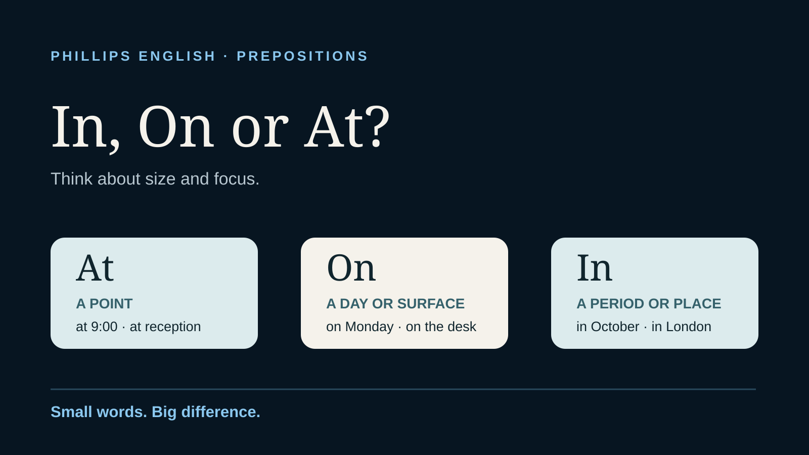

Grammar · Prepositions · Natural English
In, on or at? English prepositions for time and place
Learn the point, surface and enclosed space pattern, see natural examples and test yourself with a quick practice section.
Read the article →
Practical British English insights for work, exams and everyday confidence. Real mistakes, useful explanations and lessons from more than a decade of teaching.
Three tiny words that cause a lot of mistakes. This guide gives you a simple system for time and place.
Learn the point, surface and enclosed space pattern, see natural examples and test yourself with a quick practice section.
Read the article →
Search practical lessons or explore by topic. Every guide is written around real questions learners ask.
Learn the verb and noun rule, effect on versus affect, exceptions and practical examples.
Read article →Useful phrases for requests, follow ups, clarification and polite professional endings.
Read article →Finished past time or a connection to now? Learn the difference with practical examples.
Read article →Learn why English uses the ing form when before introduces an action directly.
Read article →Good is useful, but it gets repeated far too often. Learn eight more precise alternatives and when each one works naturally.
Read article →A very common lesson mistake and the simple pattern that makes standard English sound cleaner.
Read article →The lovely feeling when a former student gets in touch for another set of English lessons.
Read article →A clear guide to the verb forms, present perfect and pronunciation, with quick practice.
Read article →Articles, conversational contractions and the meaning of anymore, with quick practice.
Read article →Translate less, practise useful phrases and feel more comfortable joining the conversation.
Read article →How to choose the right sound, avoid extra syllables and practise in real sentences.
Read article →Patience, repetition and the lovely moment a student catches their own mistake.
Read article →Natural verb combinations and the difference between studying and graduating.
Read article →Clear models and individual feedback for words that keep catching you out.
Read article →From a job at Porsche to everyday meetings, practical preparation makes a difference.
Read article →Using AI thoughtfully and keeping human connection at the centre of lessons.
Read article →How running a successful business shapes my work with professionals.
Read article →How games, focused feedback and relevant topics help young learners use their English.
Read article →Open clearly and keep your meetings and presentations flowing.
Read article →Three useful phrases and practical coaching for clearer meeting contributions.
Read article →Ten natural word combinations, examples and practice for clearer English.
Read article →Why recognition matters, what repeated Super Tutor status means to me, and how specific feedback can motivate teachers to keep improving.
Read article →Why “My brother do a job” sounds unnatural — and the simple patterns that make work vocabulary sound fluent.
Read article →Natural phrases for talking about getting started, learning a role, gaining experience and progressing in your career.
Read article →Why double comparatives are wrong in standard English and how to choose between -er and more.
Read article →Small changes such as “was not” to “wasn’t” make spoken English sound more fluent and natural.
Read article →Learn the correct patterns with agree and natural ways to express agreement at work.
Read article →Looking for personalised help? Book a free 25-minute trial or explore private coaching.
Evergreen guides target high-value professional and exam searches, while the blog covers focused teaching insights and recurring learner mistakes.
Natural phrases for opinions, clarification, agreement, disagreement and moving discussions forward.
Read guide →Useful vocabulary and expressions for participating confidently in professional meetings.
Read guide →Answer structures, STAR language and practical phrases for professional interviews in English.
Read guide →Practical strategies for stronger fluency, vocabulary, grammar and pronunciation.
Read guide →Useful upgrades for meetings, emails, presentations and workplace conversations.
Read guide →Fix stress, TH, -ed endings, weak vowels, final consonants and connected speech.
Read guide →Browse the full collection of Business English, IELTS, presentation, interview and pronunciation resources.
View all guides →The blog grows around the same problems people bring into lessons — useful, specific English with a clear real-world purpose — alongside occasional reflections from the teaching side.
If the issue is affecting your work, exam, interview or confidence, private coaching turns the advice into practice built around your actual English.
View coaching & availability →Let’s put the ideas into practice. Your free 25 minute trial includes private online teaching, useful corrections and a conversation about your goals.
One trial per new student. No payment required and no obligation to continue. Send your preferred times and I’ll reply to arrange it.